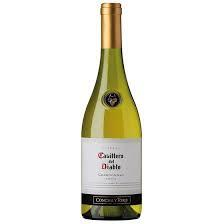
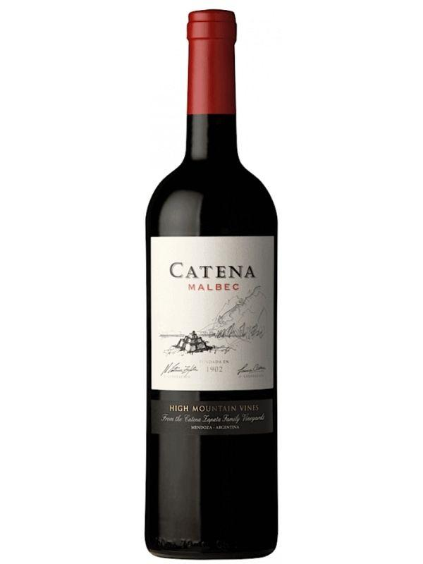

Por país
CHILE:
O vinho chardonnay, feito com uvas chardonnay, tem o gosto mais mais suave, sendo descrito como cremoso, similar a baunilha e até a manteiga, alem disso é um dos unicos vinhos brancos que aceitam o processo de envelhecimento no barril de carvalho. A marca "Casilleiro del Diablo" é uma das marcas mais populares chilenas e seu vinho chardonnay mostra o porque é tão popular. Conhecido pelo seu frescor frutado com leves notas de baunilha é uma das melhores pedidas quando se busca um vinho mais doce.
ARGENTINA:
Vindo de um dos mais conhecidas e reverenciadas produtoras da Argentina e segundo alguns especialistas representa o máximo em vinhos da América do Sul, o Vinho Catena malbec é um tinto encorpado, possui sabores complexos frutados e levemente tostados, é elegantem concentrado e intenso.